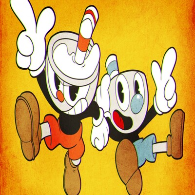

Conteúdo sobre vários jogos!
-


-


-



Sou alguém movido por desafios e curiosidade. Desde pequeno, os jogos de luta me fascinaram — não apenas pela ação na tela, mas pela estratégia por trás de cada movimento, pela evolução constante que vem com o treino e pela sensação de superação a cada vitória. Títulos como Street Fighter IV, KOF XIII e 3rd Strike me ensinaram que reflexo e mente andam juntos, e que cada personagem é uma nova forma de se expressar.
Mas meu universo vai além dos jogos. Sempre tive um interesse forte por tecnologia e computação. Gosto de entender como as coisas funcionam, desmontar ideias, escrever códigos, testar possibilidades. Não é só sobre saber usar um programa — é sobre criar, experimentar e compartilhar esse conhecimento. Por isso, além dos jogos, trago também conteúdos de computação aqui no blog: tutoriais, reflexões, dicas e projetos pessoais.
Criei este espaço como um ponto de encontro entre minhas paixões. Aqui você vai encontrar de tudo um pouco: desde aventuras em GTA V e caos no Brawlhalla, até teorias sobre sistemas, projetos de programação e dicas que aprendi na prática. Minha intenção é simples: dividir com você o que me motiva, me diverte e me ensina todos os dias.
Se você curte jogos, tecnologia, ideias fora da caixa ou só quer trocar uma ideia, sinta-se em casa. Bem-vindo ao meu mundo.
1
Aqui você encontra desde jogos clássicos e competitivos até assuntos de tecnologia e programação — tudo feito com paixão e autenticidade.
2
Cada post reflete minha vivência real, seja testando um jogo ou desenvolvendo um projeto. Nada aqui é genérico — é tudo na base do "testado e aprovado".
3
Navegação fácil, textos objetivos e um toque pessoal em tudo. É informação sem enrolação, do jeito que a galera curte.
Ao longo do tempo, fui desenvolvendo várias habilidades em áreas bem diferentes. Gosto de aprender, testar e me desafiar — e isso acabou me tornando alguém bem eclético. Seja nos games, na tecnologia, na arte ou na reflexão, estou sempre buscando entender melhor o que me cerca. Abaixo, listei alguns dos conhecimentos que fazem parte do meu mundo:
Quem mais fará parte?